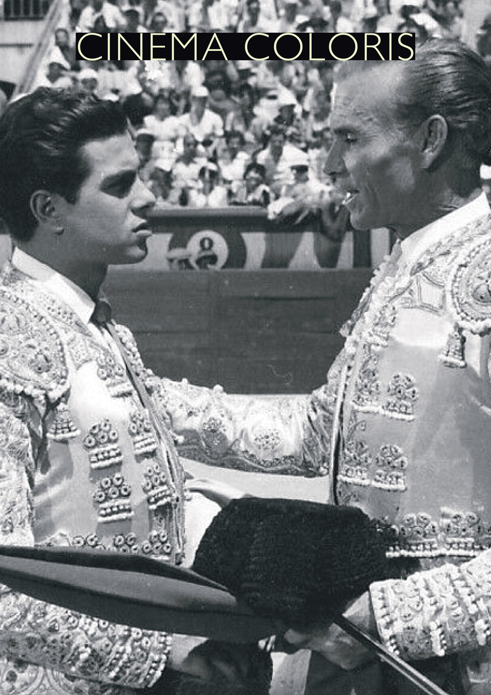

¿Qué es una película perfecta? Esta es una pregunta inútil e improductiva, a cualquier obra maestra se le pueden ver las costuras, y en esa imperfección propia de la mano del hombre, radica la verdad, la belleza y el afán de superación. Quizás se podría emplear lo de perfecta de forma muy acotada para películas muy ceñidas a ciertos parámetros o exigencias provenientes desde la producción donde el director y el resto del equipo creativo se ven con las manos atadas. Cuando los proyectos puramente de encargo consiguen hacer patente la presencia de un autor con personalidad, igual sería demasiado catalogar a estas obras como perfectas (dentro de sus parámetros), pero si cabe reivindicarlas como verdadero cine autoral.
Tarde de toros (Ladislao Vajda, 1956) es un ejemplo perfecto de cine de encargo autoral. Simplemente pensar en la situación en la que a un director húngaro le encargan un proyecto hasta cierto punto propagandístico en el que se ensalzan las virtudes de España y por consecuencia del régimen mediante la reivindicación de la tauromaquia. Además, siendo toreros los que interpretan a los toreros. Bajo ese planteamiento parece muy difícil que de ahí no salga (en el mejor de los casos) algo que no sea un ejercicio meramente estético totalmente plano. Sin embargo, se consigue crear un producto genuino con una atmósfera particular. El húngaro consigue salir por la puerta grande.
Esta es una obra coral donde se presentan cuatro historias que se entrelazan entre ellas. Se nos presentan tres toreros en diferentes etapas vitales y profesionales. Resulta interesante analizar los planos empleados para presentarnos a cada uno. El primero es Puente, el más veterano, cuyos mejores días quedaron atrás. Se muestra un plano de un retrato donde aparece pintado el torero, tras un movimiento hacia abajo y derecha se nos revela al mismo hombre del cuadro ahora en persona y con canas y arrugas, representando que vive de lo que un día fue. En un plano posterior, se muestran en primer término a ambos lados del cuadro a los amigos del torero, al fondo saliendo por una puerta, el propio Puente, mostrando su figura muy pequeña en relación a los otros personajes, se crea como un embudo que lo empuja a la puerta, representando así que todo su entorno cree que está acabado. El segundo es Carmona, un matador en el punto álgido de su carrera, aparece arriba de unas escalera en el hall de un hotel, abajo le reciben una marabunta de admiradoras. El factor altura simboliza su estado de gracia actual además de su endiosamiento idólatra por parte del público. El tercero es Rondeño II, aparece dando vueltas sobre sí mismo para ajustarse la faja, la cual sujeta su padre (Rondeño). Esa imagen evoca a la de un alfarero (el padre) torneando una pieza de cerámica todavía fresca. El cuarto relato es el de dos jóvenes pordioseros, Manolo, quien sueña con ser torero, y su amigo el Trepa. Aparecen en un plano contrapicado con la plaza detrás de ellos. Este uso del plano contrapicado denota ambición, la cual tienen por triunfar, única forma de dejar atrás sus miserias. Detrás de ellos en segundo plano se muestra la plaza, todavía más imponente gracias al uso del contrapicado. Dando entender de esta manera que pese a su ambición, su objetivo es inalcanzable.
Un elemento a destacar tanto en las escenas de la enfermería como en otra también íntima protagonizada por la mujer de Carmona, es la presencia acechante del sonido ambiente de la plaza, ciega ante cualquier dolor ajeno. Oír repetidamente “olé” mientras un chaval se debate entre la vida y la muerte genera una contradicción disonante que hace a la escena más desagradable todavía. En contraposición a esto se sitúan las escenas en la capilla, donde no cabe otro sonido que no sea el reverencial silencio, ese lugar donde esos valientes hombres se pueden permitir mostrarse frágiles e inseguros. Cabe destacar el momento en el que Rondeño y Carmona se cruzan y conversan. En todo momento hay un pilar entre ellos dos, subrayando las diferencias personales entre ambos.
Al usar imágenes reales de los toreros enfrentándose al toro, se genera un diálogo entre lo ficticio y lo real donde el baile con la muerte se hace presente. Esa fusión con el documental representa la esencia misma del film.
Para terminar, cabe destacar el último plano de la película, en el que se muestra la imponente Plaza de Las Ventas (Madrid) ya vacía tras la corrida, sucia, pero donde se oyen todavía de forma ya extradiegética el vitoreo del público. Remarcando de esta forma que la plaza en sinergia con los aficionados es un personaje más.